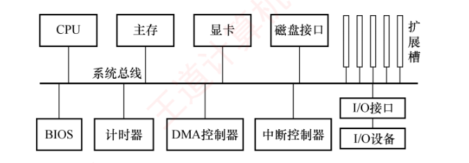
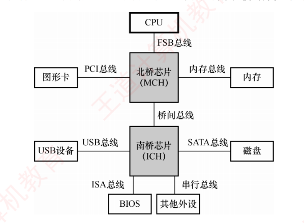

6.1 总线概述
这一节解决四个问题：总线是什么、怎么分类（6.1.1）？业界有哪些现成的总线标准（*6.1.2，课外拓展）？用什么指标衡量一条总线的好坏（6.1.3，带宽计算是绝对重点）？一条总线在整个机器里如何组织成结构（6.1.4）？
6.1.1总线的分类
早期计算机中，各部件通过专用连线直接互连，称为分散连接。随着 I/O 设备种类和数量不断增加，这种连接方式在扩展性和灵活性方面面临挑战。为提升系统的可扩展性与连接灵活性，计算机体系结构逐步演进为采用总线连接方式，并进一步催生了各类标准化总线规范。
总线是一组可供多个部件分时共享的公共信息传输线路，其核心特征是：
- 分时性：任一时刻仅允许一个部件向总线发送信息，多个发送方需要分时使用总线。
- 共享性：多个部件可同时挂接在总线上，并能同时接收总线上传输的信息。
按连接的位置和层次，总线可分为四类：
- 内部总线：芯片内部的总线，也称片内总线，用于 CPU 芯片内部各寄存器之间以及寄存器与 ALU 之间的连接。
- 系统总线：计算机系统内各功能部件（如 CPU、主存、I/O 接口）之间相互连接的总线。按所传输信息内容的不同，系统总线又分为以下三类：
- 数据总线（双向）：用于在各部件之间双向传输数据信息，包括指令、操作数、状态字、中断类型号等。其位数反映了 CPU 一次能并行传送的数据位数。
- 地址总线（单向）：用于指定要访问的主存单元或 I/O 端口的地址，由 CPU 发出。其位数决定了系统最大可寻址空间。为减少芯片引脚数量并降低成本，部分硬件架构采用地址线/数据线复用设计，此时地址与数据信息分时在同一组物理线路上传输。
- 控制总线：用于传输各种协调与控制信号，以确保各部件同步、有序地工作。典型信号包括：时钟、复位、总线请求/允许、中断请求/响应、存储器读/写、I/O 读/写、传输确认等。控制总线由若干单向或双向信号线组成，其具体构成取决于系统设计需求。
- I/O 总线：用于连接主机与其内部的各类 I/O 控制器（如显卡、网卡等），通常采用标准化内部总线协议，如 PCI、AGP、PCI Express 等。
- 通信总线：用于主机与外部 I/O 设备之间或不同计算机系统之间的通信。这类总线需要适应不同的传输距离、速率和电气规范，典型代表包括 RS-232、USB 等。
*6.1.2常见的总线标准课外拓展 · 大纲已删
总线标准是国际上制定的、用于互连计算机各功能模块的规范，是构建计算机系统时必须遵循的接口协议。典型的总线标准包括 ISA、EISA、VESA、PCI、AGP、PCI-Express、USB 等。它们的主要区别是总线宽度、带宽、时钟频率、寻址能力、是否支持突发传送等。
| 标准 | 要点（照录教材） | 归类 |
|---|---|---|
| ISA | Industry Standard Architecture，工业标准体系结构。最早的系统总线标准，传输速率低、CPU 占用率高、占用较多中断资源 | 系统总线、并行 |
| EISA | Extended ISA，扩展的 ISA。在 ISA 基础上扩展，支持多主控器和突发传送，且完全兼容 ISA | 系统总线、并行 |
| VESA | Video Electronics Standards Association，视频电子标准协会。一种 32 位局部总线标准，为满足多媒体 PC 对高速图像数据传输的需求而设计 | 局部总线、并行 |
| PCI | Peripheral Component Interconnect，外部设备互连。高性能的 32 位或 64 位总线，广泛用于显卡、声卡、网卡等扩展卡；与处理器时钟频率无关的高速外围总线，支持即插即用 | 局部总线、并行 |
| AGP | Accelerated Graphics Port，加速图形接口。专为图形卡设计的高速接口，允许显卡直接高效访问系统主存，用于加速 3D 图形和视频处理 | 局部总线、并行 |
| PCI-E | PCI-Express。采用高速串行点对点连接，由多条通道组成（如 ×1、×16），支持全双工通信，传输速率远超 PCI 和 AGP | 局部总线、串行 |
| RS-232C | 用于数据终端设备（DTE）与数据通信设备（DCE）之间进行串行二进制通信的标准接口 | 设备总线、串行 |
| USB | Universal Serial Bus，通用串行总线。用于连接外部 I/O 设备，支持即插即用、热插拔和多设备级联，广泛应用于键盘、鼠标、移动存储等 | 设备总线、串行 |
| PCMCIA | Personal Computer Memory Card International Association。主要用于笔记本电脑的扩展卡标准，支持即插即用 | 设备总线、并行 |
| IDE | Integrated Drive Electronics，集成设备电路，更准确称为 ATA。连接主板与硬盘/光驱的传统并行接口 | 设备总线、并行 |
| SCSI | Small Computer System Interface，小型计算机系统接口。一种高性能的系统级设备接口，常用于服务器硬盘等 | 设备总线、并行 |
| SATA | Serial Advanced Technology Attachment，串行高级技术附件。IDE/ATA 的串行替代标准，采用高速串行传输 | 设备总线、串行 |
6.1.3总线的性能指标
- 总线传输周期：指完成一次完整总线事务（如一次读或写操作）的总时间，通常由若干总线时钟周期组成，简称总线周期。
- 总线时钟频率：即总线基础时钟信号的频率，是总线时钟周期的倒数。早期总线的时钟与 CPU 时钟同频，随着 CPU 的快速发展，现代总线的时钟通常独立于 CPU 时钟。
- 总线工作频率：指总线每秒能进行的有效数据传输次数。早期总线每个时钟周期仅传输一次数据，此时工作频率等于时钟频率；现代总线一个时钟周期内可以传送 2 次、4 次甚至更多次数据，因此工作频率可达时钟频率的 2 倍、4 倍等。
- 总线宽度：即总线中数据线的条数，决定了每次能并行传输的数据位数。
- 总线带宽：总线在单位时间内所能传输的最大数据量，计算公式为 $$\text{总线带宽} = \text{总线宽度} \times \text{总线工作频率}$$ 其中总线宽度以字节计（若以位为单位需除以 8）。
- 总线复用：指同一信号线在不同时间传输不同类型的信号。例如地址/数据线复用中，数据线在初期传输地址，后期传输数据，因此可减少引脚数量、节省硬件成本（但并不提高传输速率）。
- 总线寻址能力：由地址线的数量决定，表示 CPU 能访问的最大地址空间。例如，16 位地址线可寻址 \(2^{16} = 65536\) 个存储单元；若每个单元为 1B，则最大寻址空间为 64KB。
6.1.4总线的结构
总线是计算机系统中各功能部件之间传输信息的公共通道，其结构设计直接影响系统的整体性能和扩展能力。随着处理器速度的不断提升，总线结构经历了从简单共享到分层并行、再到高度集成的演进过程，核心目标始终是提升带宽、降低延迟、打破通信瓶颈。
1. 早期单总线结构
在计算机发展的早期阶段，普遍采用单总线结构：CPU、主存储器和各类 I/O 设备均挂接在同一条系统总线上，如图 6.1 所示。这种结构实现简单、成本低，但所有设备必须分时竞争总线使用权，导致频繁的传输冲突，效率低下，难以满足高速外设的数据吞吐需求。

为缓解 CPU 与主存之间的通信压力，后续引入了双总线结构，增设一条专用的存储总线，使 CPU 与主存的数据交换独立于 I/O 通路。尽管主存访问效率有所提升，但 I/O 设备若需与主存交换数据，仍须通过 CPU 中转，形成了新的性能瓶颈。进一步改进的三总线结构增加了 DMA（直接存储访问）总线，允许高速 I/O 设备通过 DMA 控制器直接与主存通信，无须 CPU 干预，显著提升了 I/O 的吞吐能力。然而，传统总线固有的「共享式、广播式」特性，仍然限制了系统的并发性和可扩展性。
2. 分层次总线：南北桥结构
为突破早期总线结构的性能瓶颈，主流 PC 系统逐步转向分层次的多总线结构，典型代表是 Intel 在 Pentium 4 及早期 Core 系列处理器平台上广泛采用的南北桥结构，如图 6.2 所示。该结构将系统划分为两个功能区域：
- 北桥芯片（Memory Controller Hub, MCH）：作为高速枢纽，连接 CPU、主存和显卡，负责高带宽的数据传输。
- 南桥芯片（I/O Controller Hub, ICH）：一个 I/O 控制器集线器，负责管理 USB、SATA、以太网等低速 I/O 接口，并提供扩展槽支持。

在这一结构中，CPU 与北桥之间的互连总线称为前端总线（Front Side Bus, FSB），也称系统总线。CPU 通过 FSB 连接至北桥，再经由北桥分别与主存（通过存储器总线）和显卡通信；各类 I/O 设备（如 USB 设备、网卡、磁盘等）则通过各自的设备控制器接入南桥，北桥与南桥之间通过专用的桥接总线互连，最终形成从 I/O 到 CPU、主存的完整数据通路。
尽管该结构实现了存储通路与 I/O 通路的物理分离，但所有数据（包括内存访问以及 I/O 传输）最终仍需要通过前端总线汇聚至 CPU。因此，FSB 成为整个系统的唯一高性能通道，其共享式特性反而演变为新的性能瓶颈，严重制约了系统整体吞吐能力的进一步提升。
3. 现代集成化总线结构
自 Intel Core i7 处理器起，总线结构迎来新的转变：北桥芯片的核心功能（如内存控制器）被集成到 CPU 内部，传统北桥随之消失，系统互连方式转向片上集成与点对点互连。这一转变带来三大重要优势：
- 内存访问路径缩短：CPU 可通过片上存储器控制器直接访问主存，无须经过北桥中转。同时普遍支持多通道 DDR 内存（如双通道、三通道），各通道并行工作，理论带宽成倍递增，例如三通道 DDR3-1333 的峰值带宽可达到单通道的 3 倍。
- 处理器间高速互连：多核 CPU 内核之间、多 CPU 芯片之间通过 QPI（QuickPath Interconnect）等点对点高速串行链路实现数据交换。QPI 不仅用于 CPU 间通信，还用于连接 CPU 与 IOH（输入/输出集线器，类似于早期南桥），大幅提升了互连效率。
- I/O 通路直连：高速外设（如显卡、SSD）通过 PCIe 通道直接接入 CPU，绕过南桥；低速设备则由集成度更高的 PCH（Platform Controller Hub，新一代南桥）统一管理。